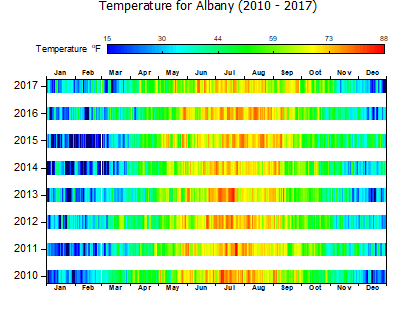

分割ヒートマップ
Heatmap-Labels

要求されるデータ
または、
グラフ作成
- 行列シートをアクティブにするか必要なデータをワークシート上で選択します。
- メインメニューから、 を選択します。
- 仮想行列からプロットする場合は、表示されるplotvmダイアログボックスで、ドロップダウンのY値、必要に応じて列ラベルソースを設定し、のX値を設定します。軸のタイトルに必要なものを決めて、OKをクリックします。
テンプレート
SplitHeatMap.OTPU
ノート
- このプロットは、仮装行列.から最も簡単に作ることができます。plotvmダイアログボックスでは、プロット内の各横棒のラベル付けに使用する列ラベル行を指定できます
- X列のデータは単調でなければなりません。
- 棒グラフの間隔を変更するには、グラフをアクティブにして、フォーマット：作図の詳細を選択します。棒の間隔タブをクリックし、Y方向のセル間の間隔 。スライダを調節します。
- 上記の作図がどのように作成されているかを確認するには、F11キーを押してラーニングセンターを開き、 "heatmap"を検索します。
- このプロットタイプは、標準ヒートマップおよびラベル付きヒートマップとコントロールを共有します。